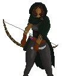
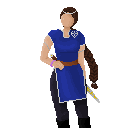

<!DOCTYPE html>
<html lang="en-US">
<head><head>
	<script src="https://code.jquery.com/jquery-3.3.1.min.js"></script>
	<script src="https://cdn.jsdelivr.net/npm/jquery.terminal/js/jquery.terminal.min.js"></script>
	<meta charset="utf-8">
	<meta name="viewport" content="width=device-width, initial-scale=1">
	<title> TWErminal </title>
	<link rel="stylesheet" href="https://cdn.jsdelivr.net/npm/jquery.terminal/css/jquery.terminal.min.css"/>
	<link rel="icon" type="image/x-icon" href="images/TWEbsiteFavicon.png">


</head>

<body>


	<script>
	$('body').terminal({
	    hello: function(name) {
	        this.echo('Hello, ' + name +
	                  '. Welcome to TWErminal.');
	    },
	    mara: function() {
	    	this.echo('\n\n ------------------------<==============>--<==============>------------------------\n\n');
	    	this.echo($(''));
	    	this.echo("Mara Ostren, an assassin and adventurer sighted in Enthan, Taria, and Chet'Tun. Her parentage is unknown.")
	    	this.echo("\n\nUPDATE: Mara was raised as an assassin with the Harachi tribe, but left the island in search of something to turn the tide of the war. She traveled with Sorcha Nikandros, Sybil Cerelia, Elethwyin Lore, and Eli Brangan. She crossed paths with the Tetrology of Mythology, Mess, and Dab Oss on many occasions.")
	    	this.echo("\n\nUPDATE: Though never publicly credited with the deed, Mara Ostren assassinated Emperor Henthan XLIV with the assistance of the rogue known as Aehtla. She did so in order to stop the emperor's plan to revoke the asylum he granted the remnants of her fleeing people. Aehtla tricked her and sent her safely home after the deed was done, allowing himself to be killed by the Golden Gilgryph in her place. Elethwyn Lore, her close friend, never learned of this act even as she allowed Mara to stay in her home.")
	    	this.echo("\n\nUPDATE: Mara Ostren was seen on The Day the Earth Shook. She fought alongside the heroes who defeated the Big Man once and for all.")
	    	this.echo("\n\nUPDATE: After working alongside Deyli Lonen to defeat the High Priest of Ocean and dethrone him, she serves as one of two chieftains of the Kun'Achi tribe. Mara also joined the newly forming Coalition out of desire to protect her island from the Arethian-Tarian war. She sent forth Archie and Ari as agents of the Kun'Achi to scout out the Heavens.")
	    	this.echo("\nSome Related Terms: chettun, deyli, kunachi, elethwyn, sybil_cerelia, sorcha, eli, elin, dab, coalition, aehtla, mess, golden_gilgryph")
	    	this.echo('\n\n ------------------------<==============>--<==============>------------------------\n\n');
	    },
	    elethwyn: function() {
	    	this.echo('\n\n ------------------------<==============>--<==============>------------------------\n\n');
	    	this.echo($(''));
	    	this.echo("Elethwyn Lore, the daughter of Nethras and Adlanniel Lore. Paladin of Vulcan and Nike. An adventurer sighted in Enthan, Taria, and Chet'Tun. ")
	    	this.echo("\n\nUPDATE: Elethwyn traveled with Mara Ostren, Sorcha Nikandros, and Sybil Cerelia for some time. She was sighted at the Rebellion in Port Eyre, and fought to put the rebels down. Afterward, she retired from adventuring and returned to her family home in Great Enthan.")
	    	this.echo("\n\nUPDATE: Elethwyn Lore has replaced her father as Head of House Lore. This follows the tragic passing of her father and her mother both in the same night. Elethwyn has kept the fact that her father became a puppet of the Big Man secret, along with the fate of her monstrously transformed mother and the infiltration of her house staff by agents of the Big Man. Elethwyn was nearly killed by her transformed mother, but she survived with the help of one loyal guard and managed to purge her house of the taint of the Big Man.")
	    	this.echo("\n\nUPDATE: Elethwyn Lore was sighted on The Day the Earth Shook as a representative of her House. Shortly afterward, she took her loyal guardsman Reeve as her husband.")
	    	this.echo("\n\nUPDATE: Elethwyn Lore has ended the silence that reigned in her House since her father passed. She has given birth to her heir, Sybil Lore, and rejoins the Emperor's cabinet as a skilled advisor. In addition, she brought about a great blessing of Nike upon Great Enthan and sparked a revival of her worship.")
	    	this.echo("\n\nUPDATE: Elethwyn Lore has joined the newly forming Coalition out of a desire to protect the world and her home nation from the fires of the Arethian-Tarian war. She brought Nick Knack with her on a mission to scout out the Heavens.")
	    	this.echo("\nnSome Related Terms: mara, sybil_cerelia, sybil_lore, sorcha, dab, coalition, reeve, house_lore, emperor, enthan, nick_knack, ")
	    	this.echo('\n\n ------------------------<==============>--<==============>------------------------\n\n');
	    },
	    chettun: function() {
	    	this.echo('\n\n ------------------------<==============>--<==============>------------------------\n\n');
	    	this.echo("The one island left in the inner sea of TWE. This island was once one of many, but the Great Calamity changed that on the 88th of Winter in the year 4358. It was spared by the god of the sea, Ocean himself. A schism arose in the Kun'Achi tribe at this time, with the eastern half of the tribe increasing their worship of the deity around his seat of power and the western half rebelling against him and seeking to dethrone him. The eastern portion of the tribe became known as the Kun'Haman, and the western portion took the name Harachi.")
	    	this.echo("\n\nUPDATE: After 100 years of war, Mara Ostren of the Harachi joined forces with Deyli Lonen of the Kun'Hamans to dethrone Ocean and bring peace to the island. This would have been impossible if it weren't for the support of Sorcha Nikandros, Sybil Cerelia, Eli Brangan, and Dab Oss. The newly reunited Kun'Achi tribe refers to itself as 'the masters of the sea' and boast the most comprehensive sailing knowledge and shipwright skills in TWE. Hydrokineticists can be found in this tribe.")
	    	this.echo("The island itself is pretty large, boasting smaller islands toward the west, a mountain range that spans its upper regions, a frosty peak, and lush jungles that reach to sandy shores. The shrine of Ocean sits in the east, though it has been toppled and Ocean no longer reigns there.")
	    	this.echo("\nnSome Related Terms: chet'tun, deyli, kun'achi, elethwyn, sybilc, sorcha, eli, elin, dab")
	    	this.echo('\n\n ------------------------<==============>--<==============>------------------------\n\n');
	    },
	    picture: function() {
	    	this.echo('\n\n ------------------------<==============>--<==============>------------------------\n\n');
	    	this.echo($(''));
	    	this.echo('\n\n ------------------------<==============>--<==============>------------------------\n\n');
	    },
	    guidelines: function() {
	    	this.echo("\n\n ------------------------<==============>--<==============>------------------------\n\nIn order to operate TWErminal, please abide by the following guidelines:\n\n TWErminal welcomes all your prompts, and will do his best to inform you about whatever you prompt him with. \n\n TWErminal is eager to serve, but easier to be confused. Please use only a single word at a time when prompting him. \n\n Please refrain from using any capital letters in your prompts. \n\n If you ever want to see these guidelines again, please prompt TWErminal with 'guidelines'\n\n ------------------------<==============>--<==============>------------------------\n\n\n\n");
	    },

	}, {
	    greetings: "TWErminal greets you. \n\n ------------------------<==============>--<==============>------------------------\n\nIn order to operate TWErminal, please abide by the following guidelines:\n\n TWErminal welcomes all your prompts, and will do his best to inform you about whatever you prompt him with. \n\n TWErminal is eager to serve, but easier to be confused. Please use only a single word at a time when prompting him. \n\n Please refrain from using any capital letters in your prompts. \n\n If you ever want to see these guidelines again, please prompt TWErminal with 'guidelines'\n\n ------------------------<==============>--<==============>------------------------\n\n\n\n",
	    prompt: '??> '
	});
	</script>


</body>
</html>